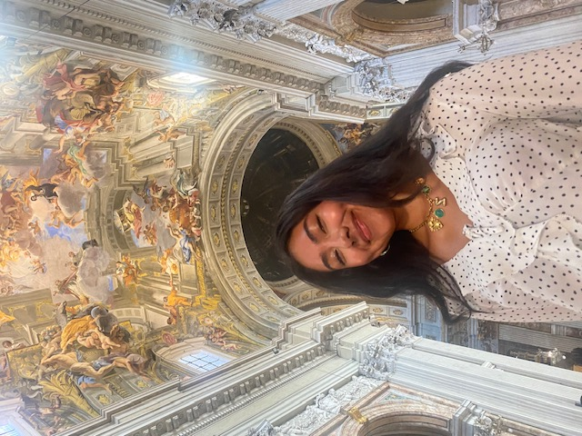

Welcome
Welcome to my DCDA Capstone Portfolio. Here I will show the work I will create this semester.
The work in this portfolio is a display of the skills I have learned during my college career.
About Me
Who I am: [My name is Zoe-Kylie Sanchez, I am a DCDA major and Writing minor]
My interests: [I am passionate about media analysis,and that is what drew me to DCDA. Some of my iterest include art history, and literature. I first started as an English major, and what first drew me to this major was its ability to combine the humanities with technology. By combining these two fields, a student is allowed to develop both soft, and hard skills, such as coding, and critical thinking.]
What I hope to learn: [I hope to become more confident in my coding skill, while also practicing good design.]
My Work
Click on any card below to view that lab assignment. Focus of actual labs may change over the course of the semester:
AI Tool Evaluation
Lab 2Analysis of AI tools and their capabilities, exploring how artificial intelligence is changing digital culture.
Tufte Critique
Lab 3Critical analysis of a data visualization using Edward Tufte's principles of graphical excellence.
Tableau Visualization
Lab 4Interactive data visualization created with Tableau Public, exploring patterns in real-world data.
Lab 5
Lab 5Content based on Lab 5 assignment.
Hometown Map
Lab 6Interactive Folium map showcasing meaningful locations from my hometown with personal reflections.
Semester Reflection
What I learned: [Reflect on the skills you developed across all six labs]
Challenges I overcame: [What was difficult? How did you work through it?]
How I grew: [How did your understanding of digital culture and data analytics evolve?]
Looking ahead: [How will you apply these skills in the future?]